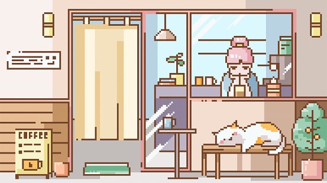

Get in Touch
Have questions about our beans, want to display your art, or interested in hosting an open mic night? We'd love to hear from you! We also have a calendar for upcoming game nights.

Visit the Café
Address: 123 Barista Way, Baltimore, MD 21201
Phone: (410) 555-0123
Email: hello@beanandbloom.com
Our Community Partners
We are proud to work with organizations that share our values of sustainability and creativity.
- Learn about our beans at Fairtrade America
- Support local creativity via the Maryland State Arts Council